IV Semana da Psicologia — Osasco · Catálogo de participantes
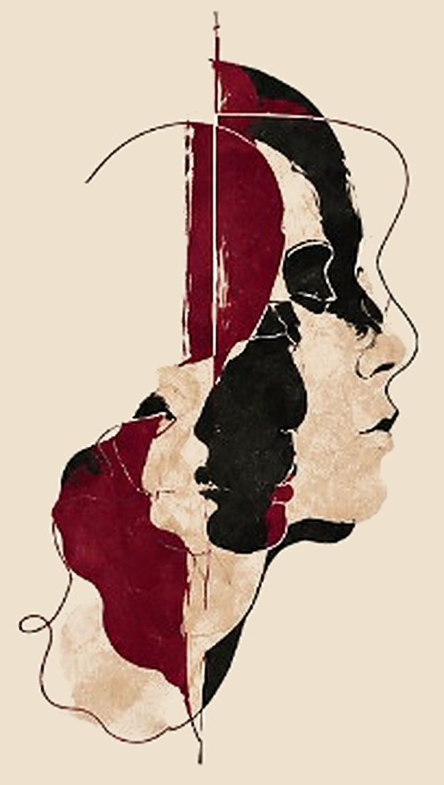
IV Semana da Psicologia — Osasco
CATÁLOGO DE PARTICIPANTES
Nem toda
violência deixa
marcas visíveis.
11, 12 e 13 de novembro de 2026
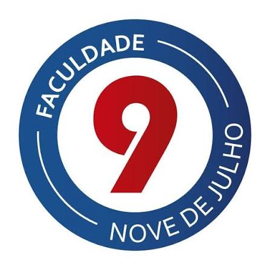
FACULDADE NOVE DE JULHO
OSASCO · EDIÇÃO 2026.2
IV Semana da Psicologia — Osasco
Apresentação
A IV Semana da Psicologia propõe uma reflexão sobre as diferentes expressões da violência, suas repercussões e as possibilidades de atuação da Psicologia, integrando formação profissional e produção acadêmica dos estudantes.
O tema central é a violência, incluindo manifestações psicológicas, simbólicas, institucionais e outras formas que podem passar despercebidas. O rosto fragmentado da identidade do evento representa essas múltiplas camadas: aquilo que está ali, mas não se vê à primeira vista.
Este catálogo reúne as convidadas e os convidados que compartilham conosco sua experiência na clínica, na pesquisa, nas políticas públicas e no sistema de justiça. A elas e a eles, nosso agradecimento.
Escutar também é uma forma de cuidar.
IV Semana da Psicologia — Osasco
Programação
11/11 · QUARTA · 19H30
Abertura on-line, no YouTube
12/11 · QUINTA · CHECK-IN 19H · PALESTRAS 19H30
Palestras presenciais
- Tipos de violência e as consequências no indivíduo.Sala 201
- Esquemas mentais e a criação de crenças que impactam o comportamento do indivíduo.Sala 301
- Ciclo da violência: desafios, limites e intervenções.Sala 502
- Políticas públicas e as rotas de acesso.Sala 601
- Violência de gênero: impactos nos grupos LGBTQIAPN+.Lab I
- Violência na escola: o papel do psicólogo na prevenção e no enfrentamento.Sala 702
- Violência psicológica e relações abusivas: identificação, acolhimento e intervenção.Sala 801
- Violência contra crianças e adolescentes: sinais de alerta, escuta e proteção.Sala 802
- Violência digital e controle nas relações: desafios para a Psicologia contemporânea.Sala 901
- Documentos da(o) psicóloga(o). Atividade para o 10º semestre.Sala 701
13/11 · SEXTA · 19H30
Apresentação de trabalhos
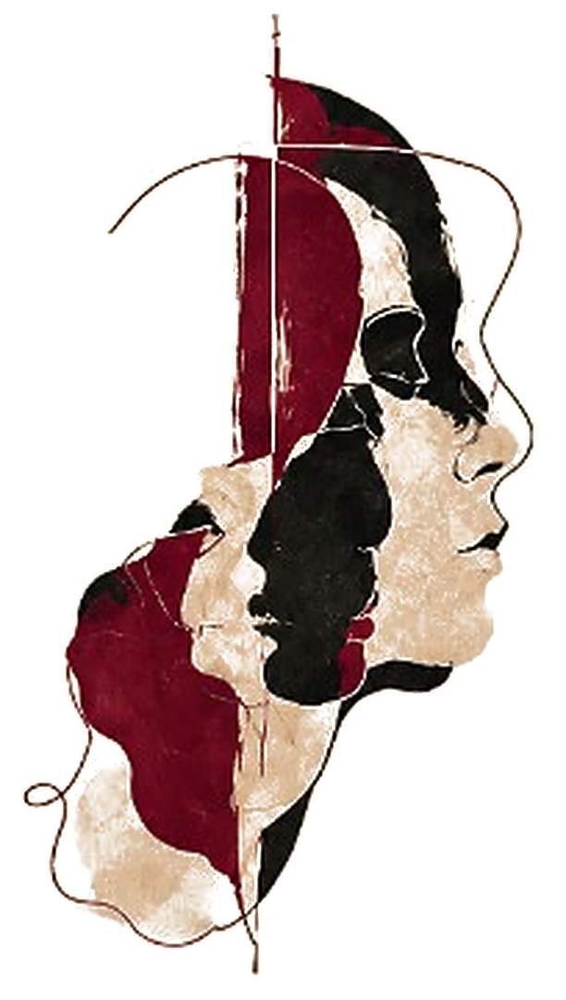
11 de novembro · quarta
Abertura
On-line, no YouTube · 19h30
Psicologia, Direitos Humanos e o Enfrentamento às Violências Contemporâneas.
IV Semana da Psicologia — Osasco
11 de novembro · Abertura
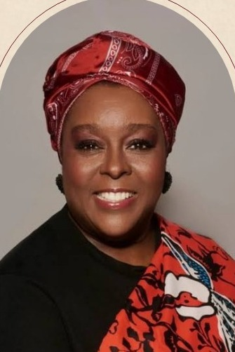
Regina Célia Almeida Silva Barbosa
Psicologia, Direitos Humanos e o Enfrentamento às Violências Contemporâneas.
Filósofa e mestra em Ciência Política pela UFPE, com 30 anos de docência. Cofundadora e vice-presidente do Instituto Maria da Penha. Atua no enfrentamento à violência contra a mulher e ao racismo.
IV Semana da Psicologia — Osasco
11 de novembro · Abertura
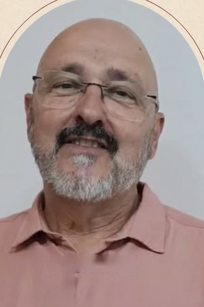
Flávio Urra
Psicologia, Direitos Humanos e o Enfrentamento às Violências Contemporâneas.
Psicólogo e mestre em Psicologia Social pela PUC-SP. Coordena o Programa E Agora, José?, de educação e responsabilização de homens. Pesquisa masculinidades, gênero e violência contra a mulher.
IV Semana da Psicologia — Osasco
11 de novembro · Abertura
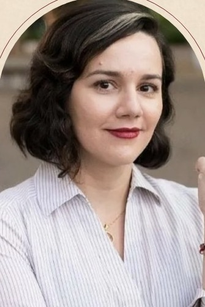
Daniela Fontoura
Psicologia, Direitos Humanos e o Enfrentamento às Violências Contemporâneas.
Psicóloga, mestra e doutoranda em Psicologia Clínica e Cultura pela UnB. Estuda gênero, feminismos e maternidades. Colabora com o projeto Maria da Penha Vai à Escola.
12 de novembro · quinta
Palestras presenciais
Faculdade Nove de Julho, Osasco · check-in às 19h · palestras às 19h30
IV Semana da Psicologia — Osasco
12 de novembro · Palestras
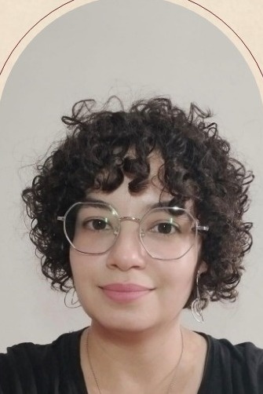
Thamyres Santos da Cruz
Tipos de violência e as consequências no indivíduo.
Psicóloga pela PUC-SP, com 12 anos de experiência com infância e juventude e dez anos na assistência social de São Paulo. Atua em proteção e acolhimento, com suporte técnico ao TJSP e ao MPSP.
IV Semana da Psicologia — Osasco
12 de novembro · Palestras
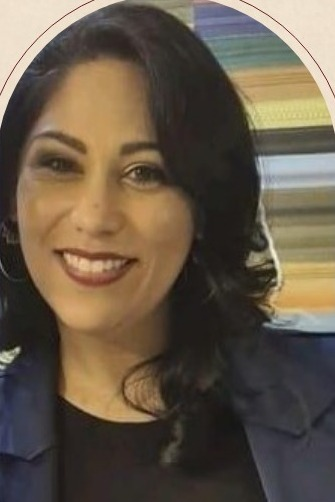
Valeska da Silva Bohus
Esquemas mentais e a criação de crenças que impactam o comportamento do indivíduo.
Neuropsicóloga, pedagoga e professora de Psicologia da Faculdade Nove de Julho, Osasco. Especialista em Neurociências, Neuropsicologia e Terapia Cognitivo-Comportamental.
IV Semana da Psicologia — Osasco
12 de novembro · Palestras
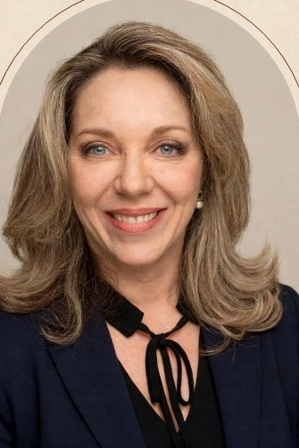
Patricia Bergantin Soares Paggiaro
Ciclo da violência: desafios, limites e intervenções.
Doutora em Saúde pela UNG e mestra em Psicologia da Aprendizagem pela UNESP. Atuou 16 anos no Tribunal de Justiça de São Paulo, na Vara da Infância e em perícias na Vara da Família.
IV Semana da Psicologia — Osasco
12 de novembro · Palestras
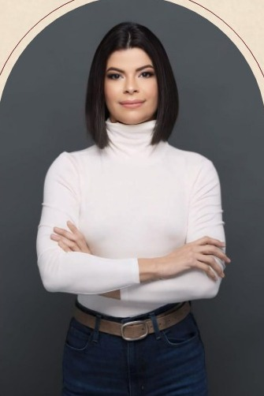
Ana Letícia Guedes Pereira
Políticas públicas e as rotas de acesso.
Psicóloga e mestra em Psicologia Clínica em Família e Comunidade pela PUC-SP. Atuou com crianças e adolescentes. É professora e supervisora de estágio social na Faculdade Nove de Julho, Osasco.
IV Semana da Psicologia — Osasco
12 de novembro · Palestras
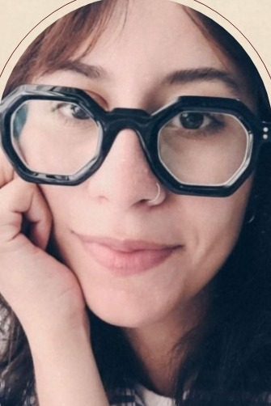
Gabriela de Souza Rodrigues
Violência de gênero: impactos nos grupos LGBTQIAPN+.
Psicóloga pelo Mackenzie e mestra em Psicologia Social pela USP. Docente da Faculdade Nove de Julho e integrante do grupo FRESTA. Pesquisa Psicanálise, violência de gênero e teorias feministas.
IV Semana da Psicologia — Osasco
12 de novembro · Palestras
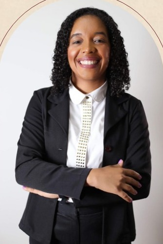
Hulda Leia Santana de Almeida
Violência na escola: o papel do psicólogo na prevenção e no enfrentamento.
Psicóloga especialista em Saúde Mental e em Psicologia Clínica. Atuou seis anos em CAPS Infantojuvenil, no Núcleo de Proteção à Violência e em ações com escolas de Perus.
IV Semana da Psicologia — Osasco
12 de novembro · Palestras
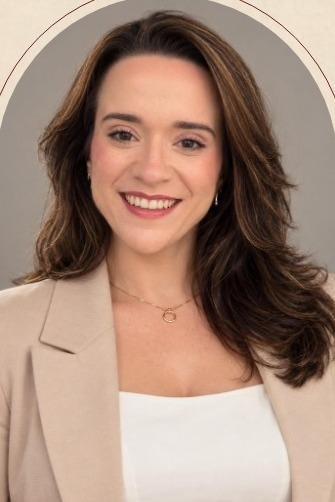
Cilene Telles
Violência psicológica e relações abusivas: identificação, acolhimento e intervenção.
Psicóloga clínica e analista do comportamento. Docente de Psicologia e fundadora da Prompt Psicologia e Desenvolvimento. Atende adolescentes e adultos, em especial mulheres e pessoas neurodivergentes.
IV Semana da Psicologia — Osasco
12 de novembro · Palestras
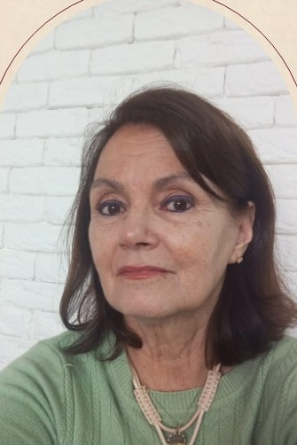
Bernadete Brosso
Violência contra crianças e adolescentes: sinais de alerta, escuta e proteção.
Psicóloga pela FMU desde 1987. Atuou 18 anos na Secretaria Municipal da Saúde de São Paulo. Hoje está na Supervisão Técnica de Saúde de Perus, no acompanhamento de situações de violência.
IV Semana da Psicologia — Osasco
12 de novembro · Palestras
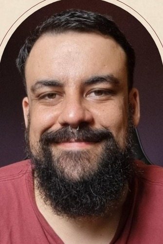
Renato Villela Gallo
Violência digital e controle nas relações: desafios para a Psicologia contemporânea.
Psicólogo clínico e neuropsicólogo, especialista em TCC pela Faculdade de Medicina da USP e em Transtornos do Controle dos Impulsos pelo IPq-HCFMUSP. Pesquisador do grupo de Dependências Tecnológicas do ProAmiti.
IV Semana da Psicologia — Osasco
12 de novembro · Palestras
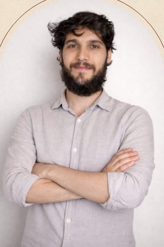
Caio Vinícius Infante de Melo
Documentos da(o) psicóloga(o). Atividade para o 10º semestre.
Psicólogo pela UNIFESP e mestre em Ciências pela Faculdade de Medicina da USP. Atuou em saúde mental, assistência social e educação no serviço público. É Especialista Técnico em Psicologia no CREPOP do CRP SP.
13 de novembro · sexta
Apresentação de trabalhos
Faculdade Nove de Julho, Osasco · 19h30
A produção acadêmica dos estudantes de Psicologia, com prioridade para a temática da violência e abertura a outras contribuições da Psicologia.
Escutar também é
uma forma de cuidar.
IV Semana da Psicologia — Osasco
11, 12 e 13 de novembro de 2026
FACULDADE NOVE DE JULHO
OSASCO